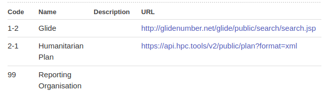

As IATI builds up use and reliance on external codelists, specifically through the function of vocabularies, there exists some risk that these lists might disappear/change/alter. Should this occur, then there should be a clear channel via which users and/or IATI can contact the list holder to seek clarification / fixes
The Humanitarian Scope Vocabulary list is a good example. There’s an ongoing thread about how one entry (GLIDE) seems to have intermittent availability, whilst the Humanitarian Plan list changed from a CSV to XML. Looking at the information presented for the list, there isn’t much to help the end user:

Q - from the Name & URL provided, can you understand who owns / publishes this list, and how to contact them?
Over at Sector Vocabulary, we now have 10 external lists. Today, one of these was discovered to be password protected (or moved), meaning it could not be accessed. We solved the issue quickly (thanks @David_Megginson @rbesseling) via twitter - but that feels rather sticky tape.
Proposal
i. For external vocabulary lists in the IATI standard, we add / revise the codelist introductory text to make it clear that these are external lists. We detail that for any issues found with these lists should be reported to either a) the list owner and b) the IATI Secretariat.
ii. For each vocabulary entry, we update the Description text to provide provenance details for the list owner. This may differ across entries, but should at least include a named organisation/publisher, and URL for contact details
iii. Infrastructure is put in place to monitor the availability of these external resources. We can’t rely on casual browsers to hit Page Not Found, or similar. There exist simple services to help us here.
iv. Efforts are made to ensure that list owners are fully aware that IATI are pointing at their list. Again, this may vary, but may mitigate against list owners changing their arrangements without notifying a user community
Further suggestions and ideas very welcome. I do not believe any of these changes are version dependent/breaking changes, and could be considered as a bug, therefore implemented quickly and effectively. Vocabulary lists are Non-Embedded, so can be changed with community consensus, as far as I understand.